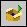

The Build toolbar provides quick access to the following build operations within a LabVIEW project. The build specifications you create and select in the Project Explorer window determine whether the buttons appear enabled or disabled. If you select multiple files, buttons might appear enabled that reflect the status of one file but not another.
|
Build All—Completes builds for every build specification under Build Specifications. |
| Build Selected—Completes the build for the build specifications you select. | |
|  | Run from Build—Runs the completed build for the build specifications you select. |